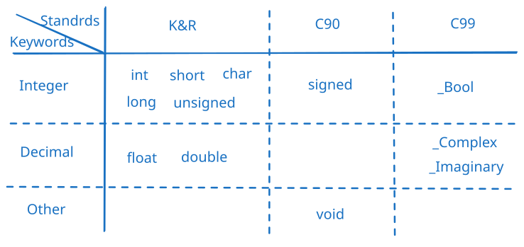
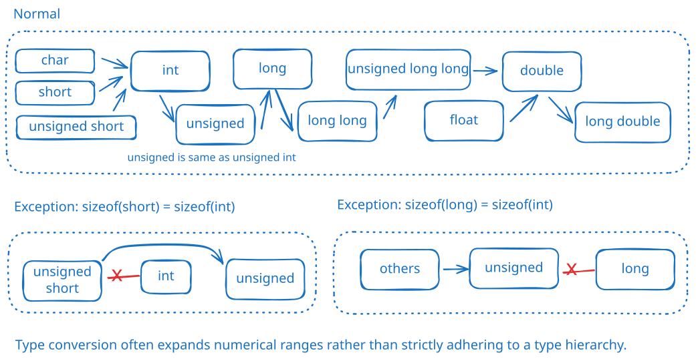

类型与大小
| 短 | 中 | 长 | 长 | |
|---|---|---|---|---|
| 有符号 | short,short int |
int |
long,long int |
long long,long long int |
| 无符号 | unsigned short,unsigned short int |
unsigned,unsigned int |
unsigned long,unsigned long int |
unsigned long long,unsigned long long int |
字面量与前缀：一个具体写在程序中的数字叫做字面量，加前缀用来表示不同的进制
| 进制 | 案例 | 简介 |
|---|---|---|
| 十进制（Decimal） | 65 |
不加前缀，默认就是十进制 |
| 二进制（Binary） | 0b1000001 |
0b，0B |
| 八进制（Octal） | 0101 |
0,（数字 0️⃣，不是字母 O） |
| 十六进制（Hexadecimal） | 0x41 |
0x，0X |
打印与后缀：为字面量加入后缀，来代表它是不同的整数类型
| type | printf | hexadecimal | octal | decimal |
|---|---|---|---|---|
char |
%c |
'\0x41' |
'\0101' |
|
int |
%d |
0x41 |
0101 |
65 |
unsigned int |
%u |
0x41u |
0101u |
65u |
long |
%ld |
0x41L |
0101L |
65L |
unsigned long |
%lu |
0x41UL |
0101UL |
65UL |
long long |
%lld |
0x41LL |
0101LL |
65LL |
unsigned long long |
%llu |
0x41ULL |
0101ULL |
65ULL |
辅助工具
字符与字符串
char 代表字符，采用 ASCII 码，占用内存 8 bits。char a = 'T';char b = "T";char[] 代表字符数组/字符串。char s[] = "T";转义字符：特殊含义的字符
| 转义序列 | 含义 |
|---|---|
\a |
警报（ANSI C） |
\b |
退格 |
\f |
换页 |
\n |
换行 |
\r |
回车 |
\t |
水平制表符 |
\v |
垂直制表符 |
\\ |
反斜杠（\） |
\' |
单引号 |
\" |
双引号 |
\? |
问号 |
\0oo |
八进制值（oo必须是有效的八进制数，即每个o可表示0\~7中的一个数） |
\xhh |
十六进制值（hh必须是有效的十六进制数，即每个h可表示0\~f中的一个数） |
| ### 1.3. _Bool |
C99添加了布尔类型，占用 1bit。 我们可以直接就使用_Bool
stdbool.h来使用bool，true代表1，false代表0占用字节数与表示范围
| 类型 | 范围 | 大小 |
|---|---|---|
| float | 大约 -3.4e38 到 3.4e38 | 通常 4 字节 |
| double | 大约 -1.8e308 到 1.8e308 | 通常 8 字节 |
| long double | 大约 -1.2e4932 到 1.2e4932 | 通常 16 字节 |
浮点型常量
double a = .0; // 正确，只省略整数
float b = 2. // 正确，只省略小数
float c = . // 错误，不能都省略
2. 科学计数法
float d = .8E-5; // 正确，可以用e
float e = .8e-5; // 正确，可以用E
float f = .8 e-5; // 错误，不能有空格
3. 后缀
float g = 4.0f; // 正确，可以用f，表示float
float h = 9.11E9F; // 正确，可以用F，表示float
double i = 4.0; // 正确，4.0默认就是double
double j = 4.0l; // 正确，可以用l，表示double
double k = 4.0L; // 正确，可以用L，表示double
double l = 4.0 * 2.0; // 正确
float m = 4.0 * 2.0; // 正确，但是double会被截断成float
4. （C99）16进制
double n = 0xa.1fp10; // 0x代表16进制，p或P代表2的幂
不同格式的 printf, 前提double num = 12345.6789;（如果num是long double那么对应的都要加L, 比如%Le）
| 类型 | 占位符 | Code Demo | Output |
|---|---|---|---|
| 普通 | %f | printf("%f\n", num); |
12345.678900 |
| 10进制科学计数法（e） | %e | printf("%e\n", num); |
1.234568e+04 |
| 10进制科学计数法（E） | %E | printf("%E\n", num); |
1.234568E+04 |
| 16进制科学计数法（a） | %a | printf("%a\n", num); |
0x1.81cd6e631f8a1p+13 |
| 16进制科学计数法（A） | %A | printf("%A\n", num); |
0X1.81CD6E631F8A1P+13 |
| 自动选择 | %g | printf("%g\n", num); |
12345.7 |
浮点数会产生舍入误差（因为 float 可以表示的精度有限）
#include <stdio.h>
int main() {
printf("%f\n",2.0e20); // 200000000000000000000.000000
float a = 2.0e20;
printf("%f\n",a); // 200000004008175468544.000000
float b = a + 1;
printf("%f\n",b); // 200000004008175468544.000000
a = b - 2.0e20;
printf("%f\n",a); // 4008175468544.000000
return 0;
}
float _Complex, double _Complex, long double _Complexfloat _Imaginary, double _Imaginary, long double _Imaginaryfloat complex, double complex, long double complexI, float imaginary, double imaginary, long double imaginary
(type)#include <stdio.h>
int main() {
printf("Float to int: %d\n", (int)(123.456f));
printf("Double to float: %f\n", (float)(123456789.123456789));
printf("Int to char: %d\n", (char)(256));
return 0;
}
Float to int: 123
Double to float: 123456792.000000
Int to char: 0